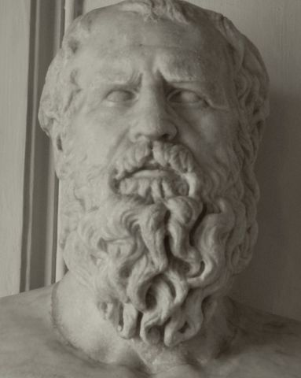

以弗所的"晦涩者"。他宣告"万物皆流"，断言斗争与对立是宇宙的节奏，把"逻各斯"（理性）置于万物中心。他的残篇像谜语，却深远地塑造了哲学对变化、矛盾与秩序的理解。
赫拉克利特的哲学以"流变"与"逻各斯"为双轴：万物在变，而变化遵循统一的理性；对立冲突不是混乱，而是宇宙的正义与节奏。以下六个概念构成其残篇的思想骨架。点击卡片进入详细解读。
"人不能两次踏入同一条河流。"变化是宇宙的常态——没有一个瞬间与上一个瞬间相同。
贯穿万物的唯一理性——"万物遵照逻各斯生成"。它是规则、言说、尺度与秩序的统一体。
"世界是一团永恒的活火。"火既变化又守恒——既是燃料的消耗，又是秩序的转换。
"战争是万物之父。"对立冲突不是混乱，而是让世界保持运转的张力与节奏。
生即是死，醒即是眠。对立面是同一事件的两面——存在的本质就是"成为"。
"清醒者共有一个世界，睡着的人各有各的世界。"多数人沉沦于昏睡，哲人独自观看秩序。
赫拉克利特的著作《论自然》仅存残篇（约130余则，今以DK编号行世）。以下五个残篇组对应其思想的五个主题，均含背景、结构表、段落精读与阅读建议。
先读概念页的"万物皆流"与"逻各斯"，理解赫拉克利特的悖论：一切都变，变中有规则。他是"悖论的艺术家"——先接受直觉冲击，再找内在秩序。
进入"残篇导读"逐组对照DK编号原句。注意赫拉克利特的风格：省略、反讽、类比——每一句都要慢读、复读。
把赫拉克利特（一切皆变）与巴门尼德（存在不变）放在对立面读：一个说"是"的变，一个说"存在"的静。再读黑格尔《哲学史讲演录》论赫拉克利特——辩证法在此找到古代源头。
本站为系统了解赫拉克利特而做。赫拉克利特以残篇形式传世——约130则短语，如谜语、如箴言。他的哲学不是体系，而是"警句的闪电"，每一道都照亮同一片天空。
他被称为"晦暗者"（ho skoteinos），也自诩为"清醒者"。读他需要慢：不要在句号处停下，而要在每次转折处重新起跑。本站力求在准确的残篇基础上，呈现变化与秩序的统一、对立与和谐的统一。